Slack
Seminarios DI Febrero 2016
Slack en un video
Qué es Slack
Slack is a messaging app for teams.
— https://slack.com/
Aprovechar las notificaciones
Objetivo: Reducir el email
Usos (Gestión)
Notificaciones Técnicos Laboratorio
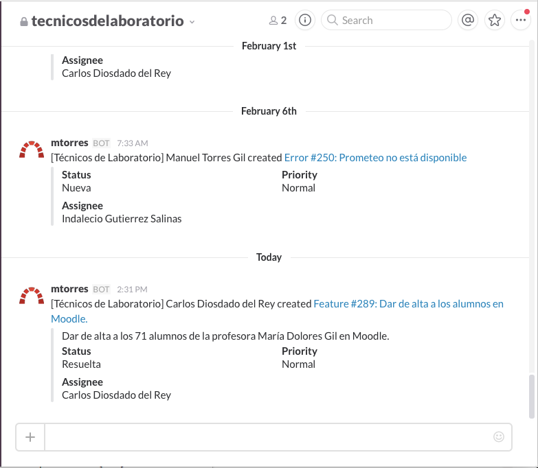
Usos (Gestión)
Notificaciones Cloud-DI
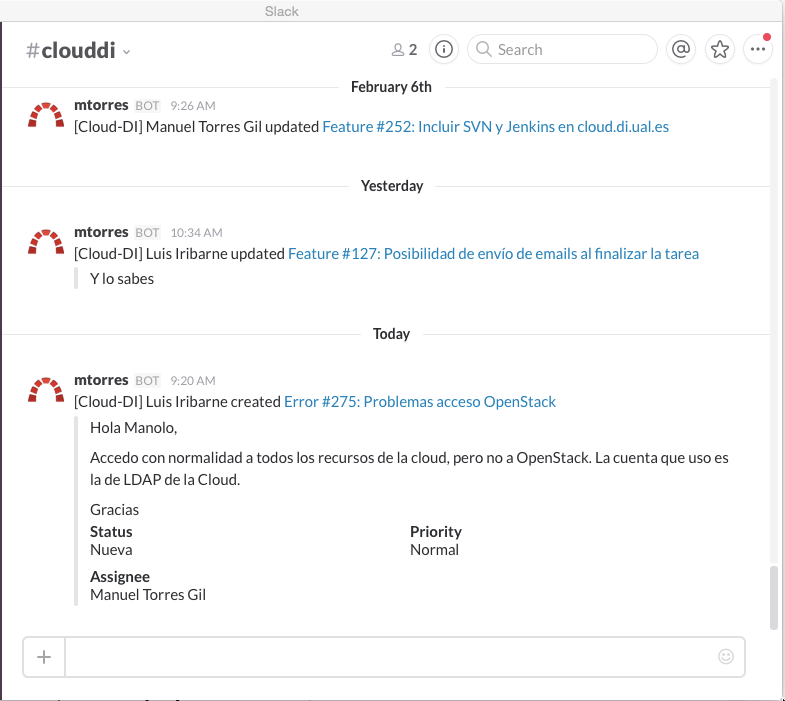
Usos (Docencia)
Notificaciones nuevas tareas (Redmine)
Notificaciones actualización repositorio (SVN, GitLab)
Notificaciones automatizaciones (Jenkins)
…
Vamos al lío
Demo (ualinformatica.slack.com)
Accesible para dominios:
ual.es
inlumine.ual.es

1. Comenzamos
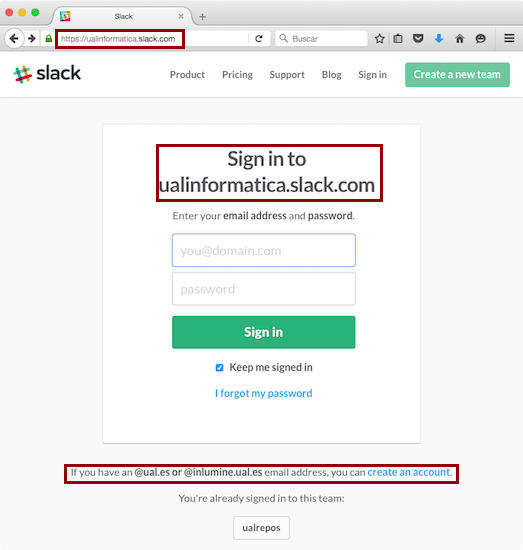
2. Sign up

3. A mirar el email
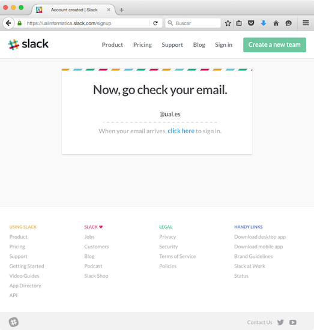
4. Confirmar
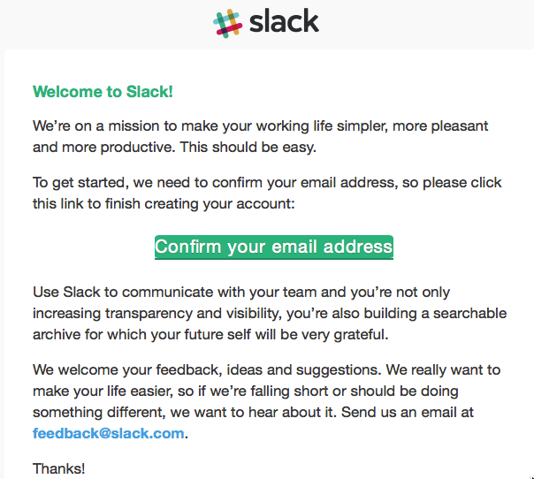
5. Sign in
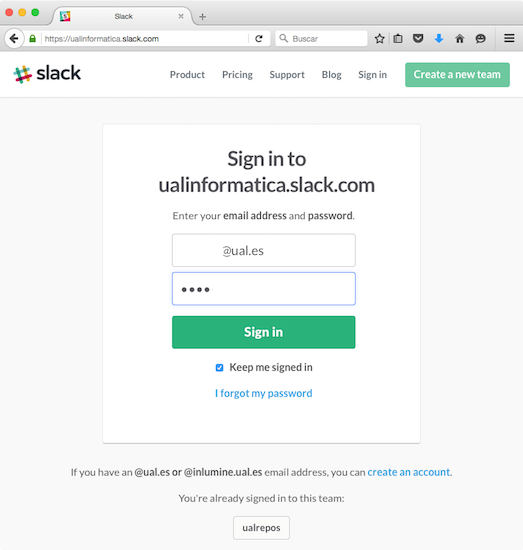
6. Elegir username (ual+loginUAL)
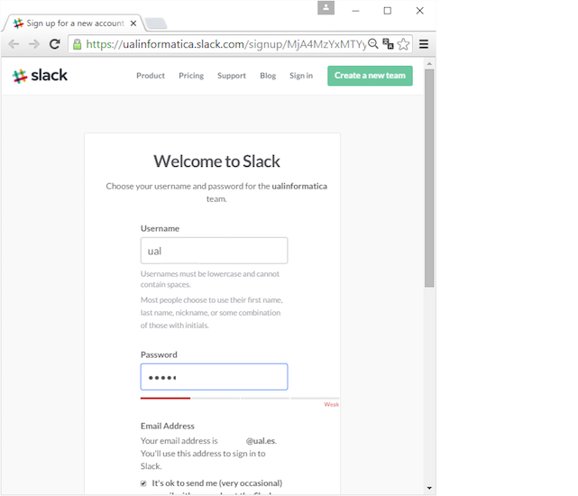
7. Primeros pasos en Slack
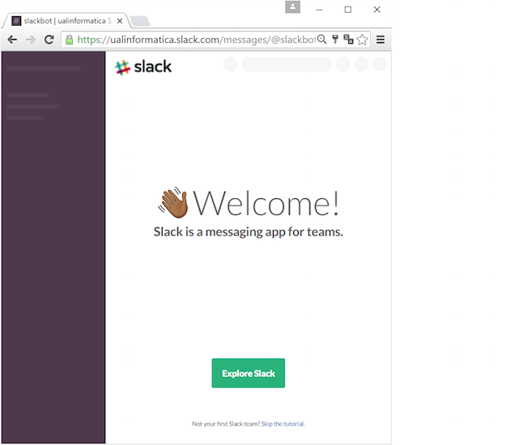
8. Estamos dentro!!
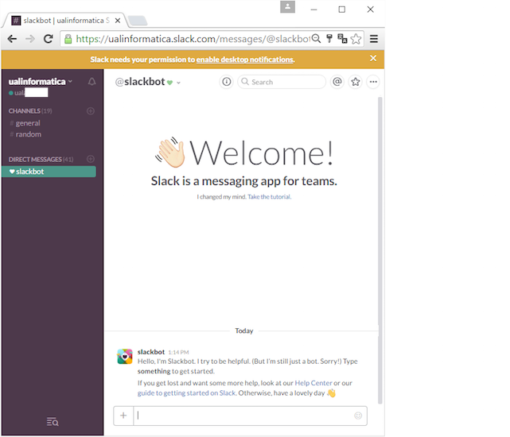
Y además …
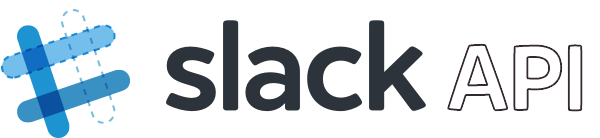
En docencia (ualrepos.slack.com)
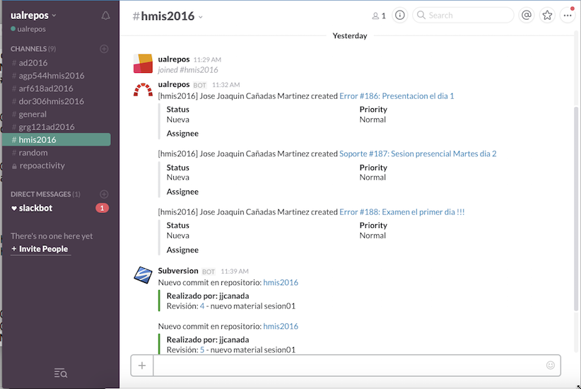
Downloads
Desktop: Mac, Windows y Linux (Beta)
Mobile: iOS, Android, Windows Phone (Beta)
Web